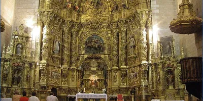
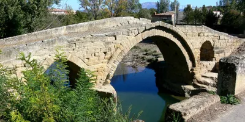

Viña Olabarri
Uno de los mejores caldos de toda La Rioja Alta
Torre fuerte de los Salcedo
Descubre los secretos de la Torre de los Salcedo
Iglesia de San Martín
Uno de los retablos más antiguos de La RIoja
Ermita de Oreca
Descubre la famosa tradición de las aceitunas
Ermita de la Esclavitud
Ermita de peregrinaje camino de Gembres
Puente sobre el río Tirón
Puente romano en la localida vecina de Cihuri